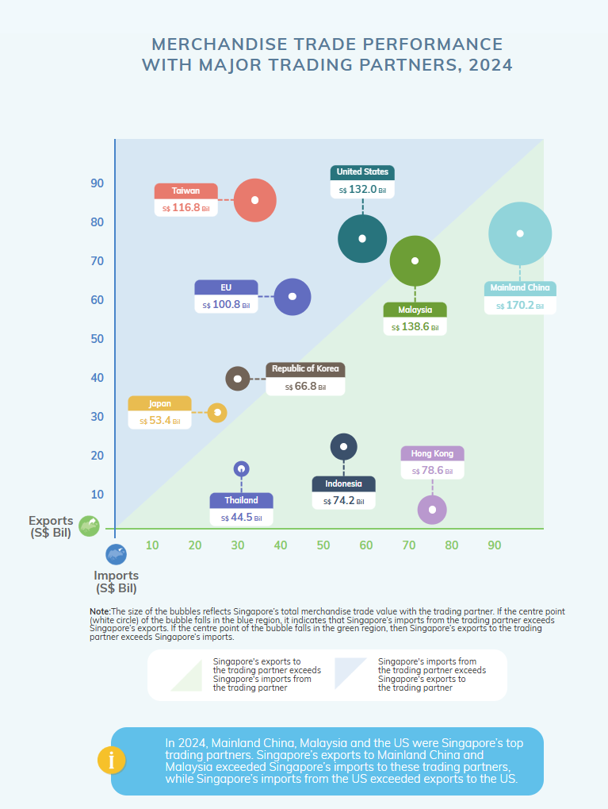
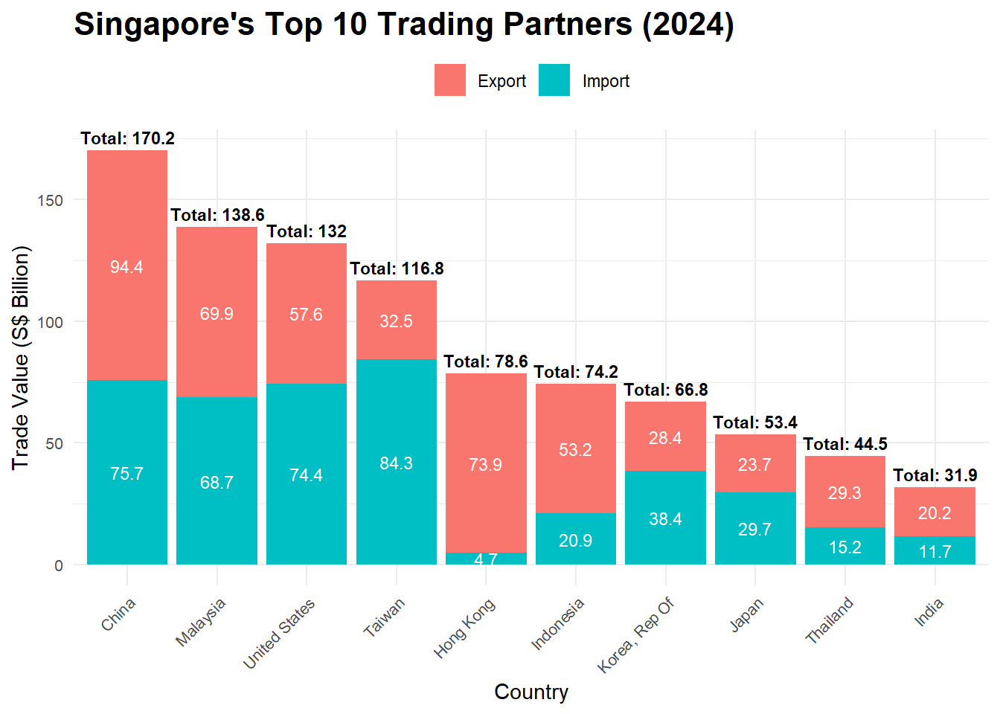
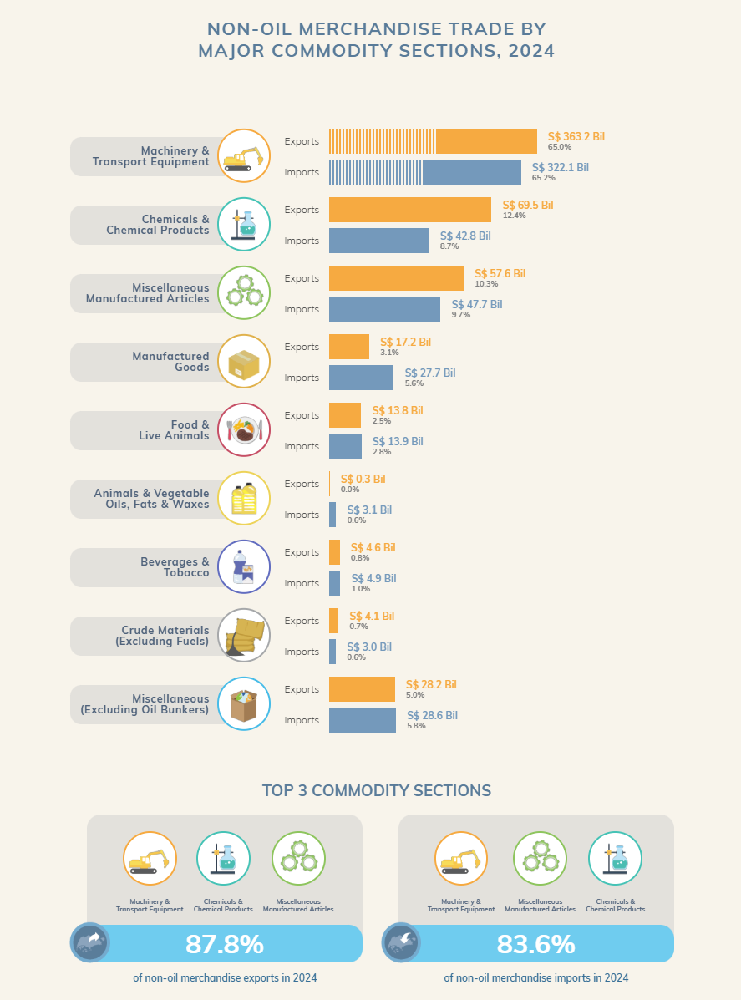

pacman::p_load(scales, viridis, lubridate, ggthemes,
gridExtra, readxl, knitr, data.table,
CGPfunctions, ggHoriPlot, tidyverse)Take-home_Ex02
Take-home Exercise 2: Be Tradewise or Otherwise
1. Overview
We try to apply newly acquired techniques to explore and analyze the changing trends and patterns of Singapore’s international trade since 2015.
2. Setting the scene
3. Our task
4. Getting started
4.1 load package
For this exercise, we load the following R packages using the pacman::p_load() function, R packages including: scales, viridis, lubridate, ggthemes, gridExtra, readxl, knitr, data.table and tidyverse.
we can download 3 files (M451491, M451501, M451511) from the website (download Merchandise Trade by Region/Market from Department of Statistics Singapore, DOS), and the 3 files represent different data, as shown below
M451491-Merchandise Trade By Region and Selected Market (Imports), Monthly
M451501-Merchandise Trade By Region and Selected Market (Domestic Exports),Monthly
M451511-Merchandise Trade By Region and Selected Market (Re-Exports), Monthly
4.2 Import data
df_Im <- read_csv("data/M451491.csv", skip = 10, show_col_types = FALSE)
head(df_Im)# A tibble: 6 × 266
`Data Series` `2025 Jan` `2024 Dec` `2024 Nov` `2024 Oct` `2024 Sep`
<chr> <dbl> <dbl> <dbl> <dbl> <dbl>
1 Total All Markets 54746. 56136. 51802. 51416. 49068.
2 America 6923. 7874. 7880. 8078. 9112
3 Antigua And Barbuda 0 0 0 0 0
4 Argentina 4 12.5 116. 4.1 8.1
5 Bahamas 0 8.1 0 0 0
6 Bermuda 0 0 0 0 0
# ℹ 260 more variables: `2024 Aug` <dbl>, `2024 Jul` <dbl>, `2024 Jun` <dbl>,
# `2024 May` <dbl>, `2024 Apr` <dbl>, `2024 Mar` <dbl>, `2024 Feb` <dbl>,
# `2024 Jan` <dbl>, `2023 Dec` <dbl>, `2023 Nov` <dbl>, `2023 Oct` <dbl>,
# `2023 Sep` <dbl>, `2023 Aug` <dbl>, `2023 Jul` <dbl>, `2023 Jun` <dbl>,
# `2023 May` <dbl>, `2023 Apr` <dbl>, `2023 Mar` <dbl>, `2023 Feb` <dbl>,
# `2023 Jan` <dbl>, `2022 Dec` <dbl>, `2022 Nov` <dbl>, `2022 Oct` <dbl>,
# `2022 Sep` <dbl>, `2022 Aug` <dbl>, `2022 Jul` <dbl>, `2022 Jun` <dbl>, …df_DE <- read_csv("data/M451501.csv", skip = 10, show_col_types = FALSE)
df_RE <- read_csv("data/M451511.csv", skip = 10, show_col_types = FALSE)
df_commodity <- read_csv("data/M451001.csv", skip = 10, show_col_types = FALSE)
head(df_DE)# A tibble: 6 × 266
`Data Series` `2025 Jan` `2024 Dec` `2024 Nov` `2024 Oct` `2024 Sep`
<chr> <dbl> <dbl> <dbl> <dbl> <dbl>
1 Total All Markets 24672 23685. 23439. 22148. 21967.
2 America 4263. 3608. 3129. 2936. 3294.
3 Antigua And Barbuda 8.8 7.1 8.3 7.7 8.2
4 Argentina 5.3 6 3.9 6.4 3
5 Bahamas 51.4 48.1 60.5 36.1 59.3
6 Bermuda 2.7 7.7 0.5 5.4 0.7
# ℹ 260 more variables: `2024 Aug` <dbl>, `2024 Jul` <dbl>, `2024 Jun` <dbl>,
# `2024 May` <dbl>, `2024 Apr` <dbl>, `2024 Mar` <dbl>, `2024 Feb` <dbl>,
# `2024 Jan` <dbl>, `2023 Dec` <dbl>, `2023 Nov` <dbl>, `2023 Oct` <dbl>,
# `2023 Sep` <dbl>, `2023 Aug` <dbl>, `2023 Jul` <dbl>, `2023 Jun` <dbl>,
# `2023 May` <dbl>, `2023 Apr` <dbl>, `2023 Mar` <dbl>, `2023 Feb` <dbl>,
# `2023 Jan` <dbl>, `2022 Dec` <dbl>, `2022 Nov` <dbl>, `2022 Oct` <dbl>,
# `2022 Sep` <dbl>, `2022 Aug` <dbl>, `2022 Jul` <dbl>, `2022 Jun` <dbl>, …head(df_RE)# A tibble: 6 × 266
`Data Series` `2025 Jan` `2024 Dec` `2024 Nov` `2024 Oct` `2024 Sep`
<chr> <dbl> <dbl> <dbl> <dbl> <dbl>
1 Total All Markets 34736. 36458. 34892. 33963. 32477.
2 America 3110. 3893. 3528. 3389. 3197.
3 Antigua And Barbuda 1.9 0.1 0 0.2 0
4 Argentina 25.7 22.3 19.4 23.8 27.1
5 Bahamas 9.8 1.3 3.7 4.3 8.1
6 Bermuda 0.1 0 0 0.1 0
# ℹ 260 more variables: `2024 Aug` <dbl>, `2024 Jul` <dbl>, `2024 Jun` <dbl>,
# `2024 May` <dbl>, `2024 Apr` <dbl>, `2024 Mar` <dbl>, `2024 Feb` <dbl>,
# `2024 Jan` <dbl>, `2023 Dec` <dbl>, `2023 Nov` <dbl>, `2023 Oct` <dbl>,
# `2023 Sep` <dbl>, `2023 Aug` <dbl>, `2023 Jul` <dbl>, `2023 Jun` <dbl>,
# `2023 May` <dbl>, `2023 Apr` <dbl>, `2023 Mar` <dbl>, `2023 Feb` <dbl>,
# `2023 Jan` <dbl>, `2022 Dec` <dbl>, `2022 Nov` <dbl>, `2022 Oct` <dbl>,
# `2022 Sep` <dbl>, `2022 Aug` <dbl>, `2022 Jul` <dbl>, `2022 Jun` <dbl>, …head(df_commodity)# A tibble: 6 × 734
`Data Series` `2025 Jan` `2024 Dec` `2024 Nov` `2024 Oct` `2024 Sep`
<chr> <dbl> <dbl> <dbl> <dbl> <dbl>
1 Total Merchandise Trad… 114153980. 116278793. 110132324. 107525960. 103512460.
2 Oil 19490290. 18488974. 18061885. 17510050. 15686654.
3 Petroleum 16418934. 15564654. 14910686. 14804334. 12611958.
4 Oil Bunkers 3071356. 2924319. 3151200. 2705716. 3074695.
5 Non-Oil 94663690. 97789819. 92070439. 90015910. 87825806.
6 Food & Live Animals 2460911. 2704579. 2237326. 2344745. 2235005.
# ℹ 728 more variables: `2024 Aug` <dbl>, `2024 Jul` <dbl>, `2024 Jun` <dbl>,
# `2024 May` <dbl>, `2024 Apr` <dbl>, `2024 Mar` <dbl>, `2024 Feb` <dbl>,
# `2024 Jan` <dbl>, `2023 Dec` <dbl>, `2023 Nov` <dbl>, `2023 Oct` <dbl>,
# `2023 Sep` <dbl>, `2023 Aug` <dbl>, `2023 Jul` <dbl>, `2023 Jun` <dbl>,
# `2023 May` <dbl>, `2023 Apr` <dbl>, `2023 Mar` <dbl>, `2023 Feb` <dbl>,
# `2023 Jan` <dbl>, `2022 Dec` <dbl>, `2022 Nov` <dbl>, `2022 Oct` <dbl>,
# `2022 Sep` <dbl>, `2022 Aug` <dbl>, `2022 Jul` <dbl>, `2022 Jun` <dbl>, …After viewing the whole table, we should change the type of date series.
First column (Data Series): Country/Region Name, Subsequent columns: Monthly data, such as “2025 Jan”, “2024 Dec”, “2024 Nov”, representing trade data for different months.
The column name is in YYYY Mon format (needs to be converted to standard time format YYYY-MM). Data needs to be converted to Long Format for time series analysis.
# rename "Data Series" as "Country"
colnames(df_Im)[1] <- "Country"
colnames(df_DE)[1] <- "Country"
colnames(df_RE)[1] <- "Country"
# Extract time column names and convert them to YYYY-MM format
time_cols <- colnames(df_Im)[-1]
time_cols_cleaned <- format(parse_date_time(time_cols, orders = "ym"), "%Y-%m")
colnames(df_Im)[-1] <- time_cols_cleaned
colnames(df_DE)[-1] <- time_cols_cleaned
colnames(df_RE)[-1] <- time_cols_cleaned
head(df_Im)# A tibble: 6 × 266
Country `2025-01` `2024-12` `2024-11` `2024-10` `2024-09` `2024-08` `2024-07`
<chr> <dbl> <dbl> <dbl> <dbl> <dbl> <dbl> <dbl>
1 Total A… 54746. 56136. 51802. 51416. 49068. 49949 52965.
2 America 6923. 7874. 7880. 8078. 9112 8581. 8462
3 Antigua… 0 0 0 0 0 0 0
4 Argenti… 4 12.5 116. 4.1 8.1 7.2 6.6
5 Bahamas 0 8.1 0 0 0 0 0
6 Bermuda 0 0 0 0 0 0 0.1
# ℹ 258 more variables: `2024-06` <dbl>, `2024-05` <dbl>, `2024-04` <dbl>,
# `2024-03` <dbl>, `2024-02` <dbl>, `2024-01` <dbl>, `2023-12` <dbl>,
# `2023-11` <dbl>, `2023-10` <dbl>, `2023-09` <dbl>, `2023-08` <dbl>,
# `2023-07` <dbl>, `2023-06` <dbl>, `2023-05` <dbl>, `2023-04` <dbl>,
# `2023-03` <dbl>, `2023-02` <dbl>, `2023-01` <dbl>, `2022-12` <dbl>,
# `2022-11` <dbl>, `2022-10` <dbl>, `2022-09` <dbl>, `2022-08` <dbl>,
# `2022-07` <dbl>, `2022-06` <dbl>, `2022-05` <dbl>, `2022-04` <dbl>, …At present, the data is in Wide Format, and we need to convert it to Long Format for time series analysis:
df_Im_long <- df_Im %>%
pivot_longer(cols = -Country, names_to = "Date", values_to = "Trade_Value")
df_DE_long <- df_DE %>%
pivot_longer(cols = -Country, names_to = "Date", values_to = "Trade_Value")
df_RE_long <- df_RE %>%
pivot_longer(cols = -Country, names_to = "Date", values_to = "Trade_Value")
df_Im_long$Date <- as.Date(paste0(df_Im_long$Date, "-01")) # YYYY-MM-DD
df_DE_long$Date <- as.Date(paste0(df_DE_long$Date, "-01"))
df_RE_long$Date <- as.Date(paste0(df_RE_long$Date, "-01"))
head(df_Im_long)# A tibble: 6 × 3
Country Date Trade_Value
<chr> <date> <dbl>
1 Total All Markets 2025-01-01 54746.
2 Total All Markets 2024-12-01 56136.
3 Total All Markets 2024-11-01 51802.
4 Total All Markets 2024-10-01 51416.
5 Total All Markets 2024-09-01 49068.
6 Total All Markets 2024-08-01 49949 head(df_DE_long)# A tibble: 6 × 3
Country Date Trade_Value
<chr> <date> <dbl>
1 Total All Markets 2025-01-01 24672
2 Total All Markets 2024-12-01 23685.
3 Total All Markets 2024-11-01 23439.
4 Total All Markets 2024-10-01 22148.
5 Total All Markets 2024-09-01 21967.
6 Total All Markets 2024-08-01 23984 head(df_RE_long)# A tibble: 6 × 3
Country Date Trade_Value
<chr> <date> <dbl>
1 Total All Markets 2025-01-01 34736.
2 Total All Markets 2024-12-01 36458.
3 Total All Markets 2024-11-01 34892.
4 Total All Markets 2024-10-01 33963.
5 Total All Markets 2024-09-01 32477.
6 Total All Markets 2024-08-01 31776.Save the cleaned data
write_csv(df_Im_long, "data/cleaned_Im.csv")
write_csv(df_DE_long, "data/cleaned_DE.csv")
write_csv(df_RE_long, "data/cleaned_RE.csv")After completing the data cleaning, we began to gradually complete the task.
5. Evaluate and design data visualization
5.1 First Data Visualization - MERCHANDISE TRADE PERFORMANCE WITH MAJOR TRADING PARTNERS, 2024

Pros:
Intuitively displays the import and export situation of major trading partners. The size of the bubble represents the trade volume, which is clear at a glance. Colors distinguish the proportion of imports and exports for easy comparison.
Cons:
Difficulty in accurately comparing bubble sizes.
Large space occupation, unable to display more countries.
Time trend not shown, limited to 2024
Sketches of the make-over
Improved version: Total trade volume by region/market
first, merge export from the two file
df_DE <- read_csv("data/cleaned_DE.csv") Rows: 47965 Columns: 3
── Column specification ────────────────────────────────────────────────────────
Delimiter: ","
chr (1): Country
dbl (1): Trade_Value
date (1): Date
ℹ Use `spec()` to retrieve the full column specification for this data.
ℹ Specify the column types or set `show_col_types = FALSE` to quiet this message.df_RE <- read_csv("data/cleaned_RE.csv") Rows: 47965 Columns: 3
── Column specification ────────────────────────────────────────────────────────
Delimiter: ","
chr (1): Country
dbl (1): Trade_Value
date (1): Date
ℹ Use `spec()` to retrieve the full column specification for this data.
ℹ Specify the column types or set `show_col_types = FALSE` to quiet this message.df_DE <- df_DE %>% mutate(Date = as.Date(Date))
df_RE <- df_RE %>% mutate(Date = as.Date(Date))
df_merged_export <- full_join(df_DE, df_RE, by = c("Country", "Date"), suffix = c("_DE", "_RE"))Warning in full_join(df_DE, df_RE, by = c("Country", "Date"), suffix = c("_DE", : Detected an unexpected many-to-many relationship between `x` and `y`.
ℹ Row 42401 of `x` matches multiple rows in `y`.
ℹ Row 42401 of `y` matches multiple rows in `x`.
ℹ If a many-to-many relationship is expected, set `relationship =
"many-to-many"` to silence this warning.df_merged_export <- df_merged_export %>%
mutate(Export_Trade_Value = coalesce(Trade_Value_DE, 0) + coalesce(Trade_Value_RE, 0))
df_merged_export <- df_merged_export %>%
select(Country, Date, Trade_Value_DE, Trade_Value_RE, Export_Trade_Value)
write_csv(df_merged_export, "data/merged_export.csv")df_Im <- read_csv("data/cleaned_Im.csv")Rows: 46905 Columns: 3
── Column specification ────────────────────────────────────────────────────────
Delimiter: ","
chr (1): Country
dbl (1): Trade_Value
date (1): Date
ℹ Use `spec()` to retrieve the full column specification for this data.
ℹ Specify the column types or set `show_col_types = FALSE` to quiet this message.df_merged_export <- read_csv("data/merged_export.csv")Rows: 51675 Columns: 5
── Column specification ────────────────────────────────────────────────────────
Delimiter: ","
chr (1): Country
dbl (3): Trade_Value_DE, Trade_Value_RE, Export_Trade_Value
date (1): Date
ℹ Use `spec()` to retrieve the full column specification for this data.
ℹ Specify the column types or set `show_col_types = FALSE` to quiet this message.exclude_regions <- c("Total All Markets", "America", "Asia", "Europe", "Oceania", "Africa")
df_Im <- df_Im %>% filter(!Country %in% exclude_regions)
df_merged_export <- df_merged_export %>% filter(!Country %in% exclude_regions)
df_Im <- df_Im %>% mutate(Date = as.Date(Date))
df_merged_export <- df_merged_export %>% mutate(Date = as.Date(Date))
df_Im_2024 <- df_Im %>% filter(format(Date, "%Y") == "2024")
df_merged_export_2024 <- df_merged_export %>% filter(format(Date, "%Y") == "2024")
df_Im_agg <- df_Im_2024 %>% group_by(Country) %>% summarise(Import = sum(Trade_Value, na.rm = TRUE)/1000)
df_merged_export_agg <- df_merged_export_2024 %>% group_by(Country) %>% summarise(Export = sum(Export_Trade_Value, na.rm = TRUE)/1000)
df_total_trade <- left_join(df_Im_agg, df_merged_export_agg, by = "Country") %>%
mutate(Total_Trade = Import + Export)
top_10_trade_partners <- df_total_trade %>%
arrange(desc(Total_Trade)) %>%
slice(1:10)
df_long <- top_10_trade_partners %>%
select(Country, Import, Export) %>%
pivot_longer(cols = c("Import", "Export"), names_to = "Trade_Type", values_to = "Value")
ggplot(df_long, aes(x = reorder(Country, -Value), y = Value, fill = Trade_Type)) +
geom_bar(stat = "identity") +
geom_text(aes(label = round(Value, 1)), position = position_stack(vjust = 0.5), size = 3, color = "white") +
geom_text(data = top_10_trade_partners,
aes(x = Country, y = Total_Trade, label = paste0("Total: ", round(Total_Trade, 1))),
vjust = -0.5, size = 3, fontface = "bold", inherit.aes = FALSE) +
labs(title = "Singapore's Top 10 Trading Partners (2024)",
x = "Country",
y = "Trade Value (S$ Billion)",
fill = "Trade Type") +
theme_minimal() +
theme(
axis.text.x = element_text(angle = 45, hjust = 1, size = 8),
axis.text.y = element_text(size = 8),
plot.title = element_text(size = 16, face = "bold"),
plot.subtitle = element_text(size = 8, face = "italic"),
legend.position = "top",
legend.title = element_blank()
)
We will create an interactive chart in shinyapp that allows viewers to select a year and see the top 10 trade partners of each year.
5.2 Second Data Visualization
We need to download the file (M451001)-Merchandise Trade By Commodity Section, (At Current Prices), Monthly

Improve version
First we have to clean dataset follow the code.
library(tidyverse)
library(lubridate)
df_commodity <- read_csv("data/M451001.csv", skip = 10, show_col_types = FALSE)
colnames(df_commodity)[1] <- "Category"
time_cols <- colnames(df_commodity)[-1]
valid_time_cols <- time_cols[!is.na(parse_date_time(time_cols, orders = c("Y b", "b Y")))]
time_cols_cleaned <- format(parse_date_time(valid_time_cols, orders = c("Y b", "b Y")), "%Y-%m")
colnames(df_commodity) <- c("Category", time_cols_cleaned)
columns_to_keep <- c("Category", time_cols_cleaned[year(parse_date_time(time_cols_cleaned, orders = "ym")) >= 2010 &
year(parse_date_time(time_cols_cleaned, orders = "ym")) <= 2025])
df_filtered <- df_commodity %>%
select(all_of(columns_to_keep))
df_import <- df_filtered[19:27, ] %>% mutate(Type = "Import")
df_export <- df_filtered[33:41, ] %>% mutate(Type = "Export")
df_cleaned <- bind_rows(df_import, df_export)
df_long <- df_cleaned %>%
pivot_longer(cols = -c(Category, Type), names_to = "Date", values_to = "Trade_Value")
print(head(df_long))# A tibble: 6 × 4
Category Type Date Trade_Value
<chr> <chr> <chr> <dbl>
1 Food & Live Animals Import 2025-01 1227051.
2 Food & Live Animals Import 2024-12 1264573.
3 Food & Live Animals Import 2024-11 1192495.
4 Food & Live Animals Import 2024-10 1219199.
5 Food & Live Animals Import 2024-09 1130865.
6 Food & Live Animals Import 2024-08 1238345.write_csv(df_long, "data/cleaned_com.csv")